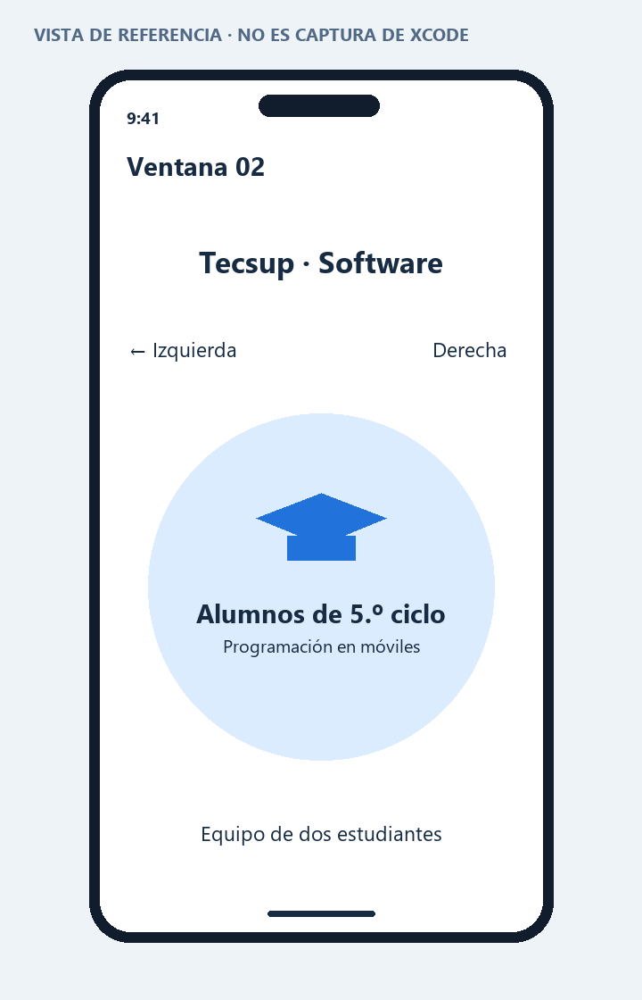

PROGRAMACIÓN EN MÓVILES AVANZADO · S08
02 · Ventana02: combinación de contenedores
Actividad de la página 7. Se propone una tarjeta de estudiantes del quinto ciclo que combina VStack, HStack y ZStack.
Cómo se organiza
El VStack principal apila el título, una fila con extremos y la tarjeta. El HStack utiliza Spacer para separar “Izquierda” y “Derecha”. El ZStack dibuja un círculo azul suave y encima presenta un símbolo de graduación con dos textos. Dentro de esa superposición se utiliza otro VStack.
Los símbolos son SF Symbols incluidos en el sistema; no hace falta descargar imágenes.
Resultado esperado
La tarjeta circular contiene “Alumnos de 5.º ciclo”. La fila inferior identifica el trabajo en pareja sin inventar nombres de integrantes.
Código y ejecución
Abre Proyecto/Contenedores.xcodeproj en Xcode 15 o posterior, con un simulador iOS 17 o posterior. El código principal está en Proyecto/Contenedores/Ventana02.swift. Consulta las instrucciones de ejecución.
La estructura de proyecto está preparada. La compilación y las capturas reales quedan pendientes de ejecutar en una Mac; no se presentan como pruebas realizadas.
Vista de referencia
Representación de la interfaz y los datos de ejemplo. No es una captura del simulador. La vista ejecutable se encuentra en el archivo SwiftUI y en su #Preview.
